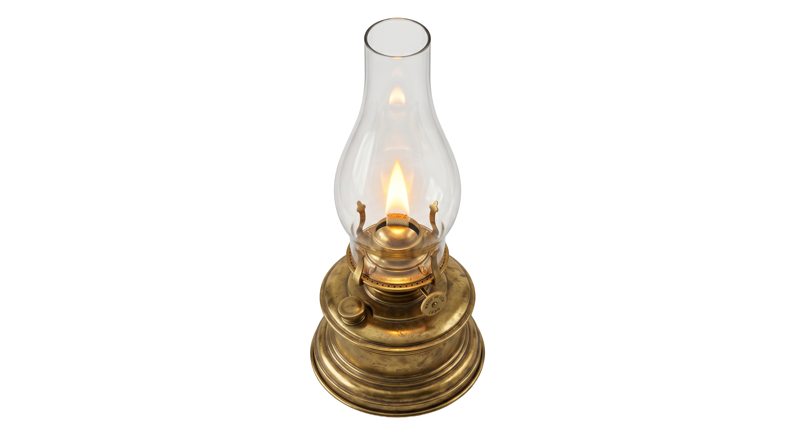
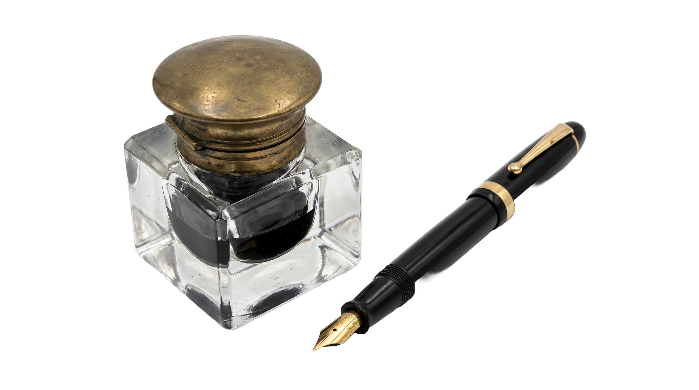

IN DUBIO
Střední Evropa, 1931
Dr. Karel Novák. Soudce. Třicet dní. Jedna minulost.
Zákon a spravedlnost nejsou vždy totéž.
KLIKNĚTE PRO ZAHÁJENÍ


SP. ZN. —
Soudní síň č. 4
1931
Stůl je prázdný.
Otevřete složku s případem.
MINISTERSTVO SPRAVEDLNOSTI
„Věřím že jste muž který rozumí nutnosti kompromisů..."
Konec pracovního týdne
Šuplík
ROZSUDKY
POSTAVY
FINANCE
ZÁZNAMY
—
Ve hře
Nálada
—
Co to znamená
—